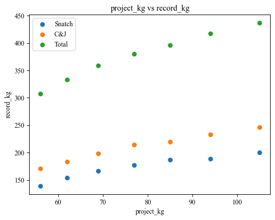

req_re_df_1
# from selenium import webdriver
# from selenium.webdriver.common.by import By
# from selenium.webdriver.chrome.service import Service
# from selenium.webdriver.chrome.options import Options
# import time
# from bs4 import BeautifulSoup
# import plotly.graph_objects as go
# 优先使用request
import requests
import re
import pandas as pd
import matplotlib.pyplot as plt
from matplotlib import rcParams
config = {
"font.family": ["Times New Roman","SimHei"],
"mathtext.fontset": 'stix', # matplotlib渲染数学字体时使用的字体，和Times New Roman差别不大
"font.serif": ['Times New Roman','SimHei'], # 黑体
'axes.unicode_minus': False # 处理负号，即-号
}
rcParams.update(config)
# exe_path = r"C:\Program Files\Google\Chrome\Application\chromedriver.exe"
# # 设置Selenium WebDriver
# options = Options()
# options.add_argument("--headless") # 无头模式，不显示浏览器界面
# service = Service(executable_path=exe_path) # 替换为你的chromedriver路径
# driver = webdriver.Chrome(service=service, options=options)
# # 查看默认的 User-Agent
# response = requests.get('http://httpbin.org/get')
# print("默认的 User-Agent:", response.json()['headers']['User-Agent'])
# # 设置自定义的 User-Agent
# headers = {
# 'User-Agent': 'MyCustomUserAgent/1.0'
# }
# response = requests.get('http://httpbin.org/get', headers=headers)
# print("自定义的 User-Agent:", response.json()['headers']['User-Agent'])
# 打开目标网页
url = "https://iwf.sport/results/world-records/world-records-old-bw/?ranking_curprog=current&ranking_agegroup=Senior&ranking_gender=m"
# driver.get(url)
# time.sleep(5)
# html_content = driver.page_source
# driver.quit()
req = requests.get(url)
if req.status_code != 200:
print("请求失败")
exit()
else:
html_content = req.text
# print(html_content)
re_kg = re.compile(r'<h2>([\d].*?)</h2>')
kg_list = re_kg.findall(html_content)
kg_list = [kg for kg in kg_list for i in range(3)]
detail_str = (r'<p>\s*(.*?)\s*</p>.*?'
r'Record: </span>\s*(.*?)\s*</p>.*?'
r'<strong>(.*?)</strong>.*?'
r'Born: </span>\s*(.*?)\s*</p>.*?'
r'</span>\s*(.*?)\s*</p>.*?'
r'<strong>\s*(.*?)\s*</strong>.*?')
re_detail = re.compile(detail_str,re.S)
detail_list = re_detail.findall(html_content)
data = [(x, *y) for x, y in zip(kg_list,detail_list )]
df = pd.DataFrame(data,
columns=['project_kg','project_how', 'record_kg','name', 'born','country', 'date&place'])
print(df.head())
Output
project_kg project_how record_kg name born country \
0 56 kg Snatch 139 kg WU Jingbiao Oct 01, 1989 CHN
1 56 kg C&J 171 kg OM Yun Chol Nov 18, 1991 PRK
2 56 kg Total 307 kg LONG Qingquan Dec 03, 1990 CHN
3 62 kg Snatch 154 kg KIM Un Guk Oct 28, 1988 PRK
4 62 kg C&J 183 kg CHEN Lijun Feb 08, 1993 CHN
date&place
0 Nov 21, 2015 - Houston
1 Nov 21, 2015 - Houston
2 Aug 07, 2016 - Rio de Janeiro
3 Sep 21, 2014 - Incheon
4 Nov 22, 2015 - Houston
# 提取 'project_kg' 列中的数字部分并转换为整数 方法一
df['project_kg'] = df['project_kg'].apply(lambda x: int(x[:-3]))
df['record_kg'] = df['record_kg'].apply(lambda x: int(x[:-3]))
# 提取 'project_kg' 列中的数字部分并转换为整数 方法二
# df['project_kg'] = df['project_kg'].str.extract(r'(\d+)').astype(int)
# 过滤、组合不同条件数据（index 不变）
df_snatch = df[df['project_how'].isin(['Snatch'])]
df_cj = df[df['project_how'].isin(['C&J'])]
df_total = df[df['project_how'].isin(['Total'])]
print(df_snatch)
Output
project_kg project_how record_kg name born country \
0 56 Snatch 139 WU Jingbiao Oct 01, 1989 CHN
3 62 Snatch 154 KIM Un Guk Oct 28, 1988 PRK
6 69 Snatch 166 LIAO Hui Oct 05, 1987 CHN
9 77 Snatch 177 LYU Xiaojun Jul 27, 1984 CHN
12 85 Snatch 187 RYBAKOU Andrei Mar 04, 1982 BLR
15 94 Snatch 189 MORADI Sohrab Sep 22, 1988 IRI
18 105 Snatch 200 ARAMNAU Andrei Apr 17, 1988 BLR
date&place
0 Nov 21, 2015 - Houston
3 Sep 21, 2014 - Incheon
6 Nov 10, 2014 - Almaty
9 Aug 10, 2016 - Rio de Janeiro
12 Sep 22, 2007 - ChiangMai
15 Aug 25, 2018 - Jakarta
18 Aug 18, 2008 - Beijing
plt.scatter(df_snatch['project_kg'], df_snatch['record_kg'],label='Snatch')
plt.scatter(df_cj['project_kg'], df_cj['record_kg'],label='C&J')
plt.scatter(df_total['project_kg'], df_total['record_kg'],label='Total')
plt.xlabel('project_kg')
plt.ylabel('record_kg')
plt.title('project_kg vs record_kg')
plt.legend()
plt.show()
# 保存原始数据
# df.to_csv('data.csv', index=False)
# 命令行使用 jupyter nbconvert --to markdown "xxx.ipynb"将 ipynb 文件转换为 markdown
Output
